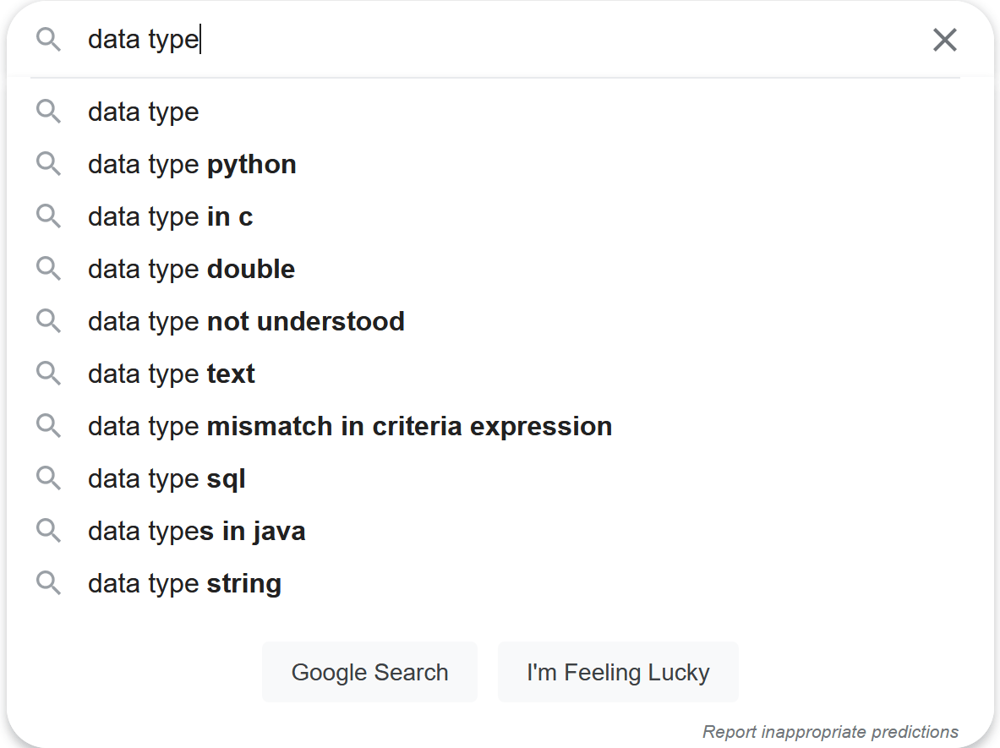
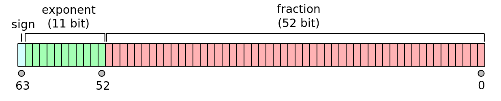
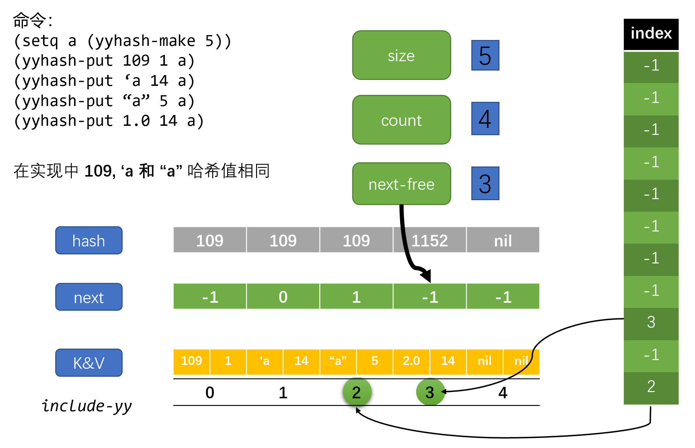

emacs 中的哈希表与多值返回
Table of Contents
本文是对 elisp manual 上 Hash Tables 一章的学习总结。除了介绍哈希表相关函数的使用，本文也会简单介绍哈希表的一些知识。考虑到 elisp 和 common lisp 中哈希函数存在一定的差异，本文也会介绍一下 CL 中的多值返回和 cl-lib 中的对应实现。
本文顺带介绍一下数据结构和数据类型的关系。这个问题困扰了我很久，但一直也没有弄清楚的动力。本文的第一章尝试给出一种理解，希望对你有所帮助。
本文的最后一节会参考 emacs 的 hashtable 实现来给出一个简单的 elisp 的实现。
文中代码使用的环境为：
- emacs-27.2-x86_64 on windows
- SBCL 2.2.0 on windows
1 数据结构和数据类型
哈希表，它是一种数据类型呢，还是一种数据结构呢？不知你想过这个问题没有。在 Python 中我们有叫做 dict 的 数据类型 ，但哈希表（或者叫做散列表）也是一种常见的 数据结构 ，而且 Python 的字典类型还是以哈希表 实现 的。数据类型和数据结构的关系我貌似理解的不是很清楚，也许我在学习《数据结构与算法》的时候根本就没想过类似的问题。
这个问题我本想留在介绍写完 symbol 类型相关文章后再着重学习一下，但是思来想去发现好像绕不开它，这里就简单的提一下吧。我会参考各方资料来给出我的理解，如有异议欢迎交流。 凡是没有引用的部分都掺杂了我自己的观点。
一般来说，提到数据类型时我们可能都会想到编程语言的基本数据类型。在百度上以“数据类型”作为关键字搜索，可以看到一系列某某语言基本类型的内容。说到数据结构，我们想到的大概也是表栈队数图堆等等常见数据结构，以“数据类型”作为关键字，通常会出现“几大数据结构”的搜索结果，或是“数据结构与算法”。以 Google 作为搜索引擎得出的结果大同小异，关注点都在“基本数据类型”和“数据结构与算法”上。
想想也明白为什么得到这样的搜索结果。刚开始学习程序语言的时候书的最前几章通常都会介绍一下语言的基本数据类型，毕竟这是语言的基本要素之一。至于数据结构也好理解，常用或者说常见的的也就那几种。
| data type | data structure |
|---|---|
|  |  |
1.1 什么是数据类型
关于数据类型，我不是太清楚它是什么时候出现的，这里就抄一下维基百科1上的内容吧：
在计算机科学和计算机编程中，数据类型或者类型是指数据的一种属性，它告诉编译器或解释器程序员是如何使用数据的。大多数的程序语言支持基本的数据类型，即整数，浮点数，字符和布尔值。
数据类型限制了表达式的取值。数据类型定义了对数据的操作，数据的含义，以及数据的存储值方式。
维基百科上给了尝试给类型一个定义的论文2，也许我会找个时间通读一遍，不过现在还是算了吧。上面的引文中强调了数据类型的三个要素，即 变量的操作 ， 变量的取值 与 变量的存储方式 ，其中存储方式是与数据类型的实现相关的。
举例来说，C 中的 int 类型使用 4 个字节（大部分）存储，它的取值集合是 -2^32 ~ 2^32 - 1，可以进行的操作包括 +，-，*，/，++，–，<，<=，==，!=，>，>=，||，&&，!，&，| 等。这些信息应该足够描述 int 的所有性质了。
1.2 抽象数据类型（ADT）
同样，这里先贴一点维基百科3过来：
在计算机科学中，抽象数据类型是数据类型的数学模型。ADT 是从使用者角度来定义的，它包括所有可能的值，该类型所有可能的操作，以及这些操作的效果。数学模型与数据结构是相对应的，数据结构是数据的具体表示，它是从实现者的角度来定义的。
形式上来说，ADT 可以被定义成“逻辑行为（behaviour）由一个取值集合和操作集合定义的某一类对象”，这和数学中的代数结构很类似。对于“逻辑行为”的解释主要有两种，分别是 axiomatic (algebraic) specification（代数规范） 和 abstract model（抽象某型），前者对应于公理语义（Axiomatic semantics）而后者对应于抽象机器（Abstract machine）的操作语义（Operational semantics）。
ADT 是一个理论概念，在计算机科学中用于设计和分析算法，数据结构和软件系统。它并不对应于计算机语言中的特性 —— 主流计算机语言不直接支持形式地指定 ADT。但是许多语言的特性都与 ADT 中的某些概念相对应，它们很容易和 ADT 本身相混淆，比如抽象类型，不透明类型，协议和契约式设计（design by contract）。
上面的一段话主要强调了 ADT 的理论性，相比于数据类型，它只指定了取值集合和操作集合，而没有指定数据类型的具体实现，这应该就是“抽象”代表的意思，即不关心数据类型的具体实现。就我来看，这有点像所谓的“接口与实现分离”，不过这就和各语言提供的抽象机制相关了，不同语言提供了不同的方法来达到该目的。
关于 ADT 的定义，维基百科上将它分为两种风格，分别是命令式和函数式，前者强调状态，后者强调无状态（笑）。具体的解释可以自行参考，这里我给一篇左耳朵耗子写的文章，他简单介绍了函数式定义 ADT 的方法：类型的本质和函数式实现 – coolshell
在这篇文章里面，他强调 类型的本质是由操作和操作间关系 定义的，使用者 只依赖于类型规范而不依赖于具体实现 。感兴趣的同学可以读一读，我感觉写的非常好。
1.3 什么是数据结构
让我们再次参考维基百科4：
在计算机科学中，数据结构是计算机中存储，组织数据的方式。更准确地说，它是数据的代数结构。
数据结构是 ADT 的基础。ADT 负责定义数据类型的逻辑形式，数据结构负责实现数据类型的物理形式。不同种类的数据结构适用于不同的应用，某些数据结构是高度特化于特定任务的。例如，关系型数据库一般使用 B 树来索引数据，编译器一般使用哈希表来查符号。
数据结构提供了管理大量数据的高效方式。通常，高效的数据结构是实现搞笑算法的关键。某些形式设计方法和程序语言强调数据结构而不是算法来作为软件设计的关键组织因素。
数据结构是基于计算机读写任意位置内存数据的能力的。数组和记录（record）数据结构基于数据的地址和（地址）算数操作，链式数据结构基于结构中存储的地址数据。
数据结构的实现一般需要编写一个用于创建和操作结构实例的过程集合。数据结构的效率分析是不能脱离这些操作的。
和上面的 ADT 小节结合一下，ADT 和数据结构之间就像是接口与实现的关系。数据结构负责 ADT 的实现，它依赖于计算机提供的内存读写功能。计算机中最基本的存储单元应该就是块状内存了，它应该算得上数据结构之母，或者说随机可随机访问的块状单元是数据结构的基本组成单元。
TAOCP 第一卷的第二章介绍的就是各种各样的数据结构，在这一章的开头高德纳这样写道：
计算机程序通常是对一些信息表进行操作。在大多数情况下，这些表不仅仅是杂乱无章的数值集团；它们含有数据元素之间重要的结构关系。
在最简单的形式下，一个表可以是元素的一个线性表……在更复杂的情况下，表可以是一个二维的数组，或者是具有更高 n 值的 n 维数组；它可以是一个树结构，表示层次或分支关系；或者是复杂的具有大量交互联系的多重链接结构，如同在人的大脑中我们可以找到的那样。为了合理地使用一台计算机，我们需要理解存在于数据内的结构关系，以及在一台计算机内表示和操作这样的结构的基本技术。
本章综述关于信息结构最重要的事实；不同类型结构的静态和动态的性质，进行存储分配的手段和结构化数据的表示，以及建立、改变、存取和破坏结构信息的有效算法……我们所关心的几乎完全是在一台计算机内部所表示的结构。
对于数据结构的解释可能没有比上面的文字更权威的了。
1.4 数据类型，ADT 和数据结构之间的关系
就我上面提到的内容来看，我可以这样总结一下：数据类型 = ADT + 数据结构。数据类型作为程序实体，ADT 作为理论实体，数据结构负责具体的实现。ADT 和数据结构应该是一对多的关系，即一种接口可以对应不同实现。
这一节只能说是一个简单的知识梳理，我挺想找个时间学习一下数据类型对应的计算机发展史的。对于“程序=数据结构+算法”这句话我始终感到不是很理解，它相当于是把数据结构和算法提到了相同重要的程度（可能是理论（算法）和实践（数据结构实现）构成了程序的意思？），也许我对于数据结构的理解和三四十年前的理解有了偏差，这需要一点考古的进行。不过这应该是个超级大坑，希望我能有看“古代”文献的时间。
我也听说过类型系统和类型理论，以及神奇的类型体操，希望以后有时间都去了解一下。
查资料的时候，不知道咋回事想到了《巴比伦图书馆》这本书，天晓得我为什么想到的（笑）
1.5 示例：一个简单的 ADT 及其实现
简单起见，这里我给出一个自然数的 ADT 定义，并使用 LIST 作为其实现。
TYPE NAT:
Operations: ;操作
zeroy ;创建 0
add1y X ;将 X 加 1 并返回 X+1
sub1y X ;将 X 减 1 并返回 X-1
Invariants: ;约束
sub1y(add1y(X)) == X
if X is not zero then
add1y(sub1y(X)) == X
if X is zero then
sub1y(X) == zero
这个 ADT 是我随手糊的，严谨性可能得不到保证，下面我们使用 elisp 中的 list （也就是单链表）来实现这个 ADT：
(defun zeroy () ()) (defun add1y (X) (cons '() X)) (defun sub1y (X) (if (null X) () (cdr X))) (defun cmpxy (X Y) (cond ((and (eq X (zeroy)) (eq Y (zeroy))) 0) ((eq X (zeroy)) -1) ((eq Y (zeroy)) 1))) (defun addxy (X Y) (if (eq X (zeroy)) Y (addxy (sub1y X) (add1y Y)))) (defun mulxy (X Y) (if (= (cmpxy X (zeroy)) 0) (zeroy) (addxy Y (mulxy (sub1y X) Y)))) (defun nat2yyn (n) (if (zerop n) (zeroy) (add1y (nat2yyn (- n 1))))) (defun facty (X) (if (eq X (zeroy)) (add1y (zeroy)) (mulxy X (facty (sub1y X))))) (facty (nat2yyn 3)) => (nil nil nil nil nil nil)
2 什么是哈希表
（下大部分内容都来自维基百科中的 hash table 和 hash function 词条，出于美观原因我就不使用引用格式了。考虑到本文的主要内部并不是介绍各种哈希算法，这一节只是简单介绍一些相关知识。）
哈希表也叫散列表，它是一种实现了关联数组（associate array）ADT 的数据结构。所谓关联数组就是可将键映射到值的一种结构。哈希表使用哈希函数来计算索引（也叫哈希值），然后使用索引访问数组中的桶或槽，并从中找到想要的数据。
理想情况下，哈希函数会将键映射到唯一的桶，但大多数哈希使用了不完美的哈希函数，它会导致多个键的哈希值相同，即出现哈希碰撞。在良好设计的哈希表中，查找的平均时间是独立于表中存储元素个数的。许多哈希表设计允许任意地插入和删除键值对，每次操作只需要常数时间。
使用哈希的好处在于值的地址可以通过直接计算键得到。哈希化包括一个哈希函数 h，它应用于键 k 得到哈希值 M。考虑到 M 可能非常的大，哈希值应该映射到有限长度的表中的实体。对于哈希值 M 和长度为 N 的表，通常有几种方式来进行映射。最常见的就是取 N 的余数，即 M % N。
2.1 作为 ADT 的关联数组
在计算机科学中，关联表也叫做映射（map），符号表（symbol table），或字典（dictionary），它是由键值对组成的 ADT。与之联系的操作包括：
- 添加一个序对
- 移除一个序对
- 修改一个现存序对
- 查找一个键对应的值
关联数组的两种主流实现是哈希表和查找树。许多语言都将关联数组实现为基本类型，比如 php 中的数组。
2.2 哈希函数
对哈希函数基本的要求就是提供一个离散均匀分布的值。非离散均匀分布会增加哈希碰撞和处理哈希碰撞的成本。在设计时哈希函数是很难保证均匀的，不过这可以通过统计测试来确认。
哈希函数的分布仅需要在表所在范围内是均匀的就行。例如，如果表动态调整大小是精确的加倍或减半的话，那么哈希函数只需要在 2 的幂范围内保证均匀。某些哈希算法更适用于大小为素数的表。
如果实现知道了所有的键，那么可以选择完美哈希函数5来创建不会冲突的哈希表。
2.3 哈希碰撞的解决方案
最为人所知的两种方法是拉链法和开放寻址法。这方面的文章也挺多了，搜一搜就可以找到，我也懒得自己写一份了，这里就放两个链接吧：
文章的作者是 Petrus，这是他的个人博客：https://www.codeplayer.org/index.html ，这个 blog 应该是使用了 org-mode 来生成网页。
3 emacs 的 hashtable
本节简单介绍 emacs 中哈希表的使用，简单介绍了各个函数的使用，算是过了一遍官方文档吧。
3.1 hashtable 的创建和表示
hashtable 是以 record 来表示的，它的 record 类型是 hash-table 。可以通过字面量来创建 hashtable，就像这样：
#s(hash-table size 30 data (a 1 b 300)) => #s(hash-table size 30 test eql rehash-size 1.5 rehash-threshold 0.8125 data (a 1 b 300))
emacs 提供了 make-hash-table 这个函数来创建哈希表，它接受一些关键字来指定 hashtable 的性质。可用的关键字如下：
:test用来指定 hashtable 中的键查找比较方法，默认是eql，它可以为eqeql和equal:size用来指定创建哈希表的大小。默认大小是 65:rehash-size，哈希表满后自动增长时的增长量。如果为整数则必须为正数，它表示在原来基础上加上原大小整数倍数的容量。如果为浮点数则必须大于 1，哈希表在增长时变为原大小乘浮点数。默认值是 1.5:rehash-threshold，扩容因子，指定哈希表进行自动增长的临界点。当哈希表中的键值对数量与哈希表“标称大小”比值超过该值时哈希表就“满”了。它应该是一个不大于一的浮点数。默认值为 0.8125
所谓的“标称大小”就是实际大小除以扩容因子得到的值，即哈希桶个数，它是大于实际可用存储单元数量的。若 size 取 65，那么哈希桶个数差不多就是 80。这个 0.8125 是有来头的，当表中项数与桶数量之比超过某一界限后，哈希碰撞的几率将直线上升。具体可以词条 hash table6上的说明。
除了以上四个选项外还有一个 :weakness 选项，它用来指定是否对哈希表中键值对的键或值进行垃圾回收。它的取值为以下几项：
key，哈希表不保护它的键不被 gc。若某一个键被回收了，那么该键值对会从哈希表中移除value，哈希表不保护它的项中的值不被 gc。若值被回收了，那么该键值对会被移除key-and-value和t，哈希表不保护键和值不被 gc。若某项的键或值被 gc 了，那么该项会被移除key-or-value，当键和值都被 gc 后，项才会被从哈希表中移除nil，键值对会被哈希表保护而不被 gc，这是默认选项
3.2 哈希表属性获取
以下函数可以获取 hashtable 的各项属性：
hash-table-p，判断对象是否为哈希表hash-table-count，获取哈希表中键值对个数hash-table-test，获取 test 函数hash-table-weakness，用来获取 hashtable 的 weakness 属性hash-table-rehash-size，获取 rehash-sizehash-table-rehash-threshold，获取 rehash-threshold，即扩容因子hash-table-size，获取 hashtable 当前大小
(make-hash-table) =>
#s(hash-table size 65 test eql rehash-size 1.5 rehash-threshold 0.8125 data ())
(hash-table-p 1) => nil
(hash-table-p #s(hash-table)) => t
(hash-table-count (make-hash-table)) => 0
(hash-table-test (make-hash-table)) => eql
(hash-table-weakness (make-hash-table)) => nil
(hash-table-weakness (make-hash-table :weakness 'value)) => value
(hash-table-rehash-size (make-hash-table)) => 1.5
(hash-table-rehash-threshold (make-hash-table)) => 0.8125
(hash-table-size (make-hash-table)) => 65
3.3 哈希表的基本操作
gethash key table &optional default，在表中查找 key，并返回对应的值。若没找到则返回 defaultputhash key value table，将键值对加入表中，若键已存在则将值替换为 valueremhash key table，若表中存在 key，从表中删除 key 对应的键值对，否则什么也不做。返回值总为 nilclrhash table，清空表maphash function table，对表中键值对使用 function ，返回 nil。函数应接受 key 和 value 两个参数copy-hash-table，创建并返回一个表的副本，与原表共享键值对，也就是浅拷贝。
(gethash 'a #s(hash-table data (a 1))) => 1 (gethash 'b #s(hash-table data (a 1))) => nil (gethash 'b #s(hash-table data (a 1)) 'hello) => hello (setq a #s(hash-table)) (puthash 'yy 19 a) => 19 (gethash 'yy a) => 19 (puthash 'yy 20 a) => 20 (gethash 'yy a) => 20 (remhash 'yy a) => nil (gethash 'yy a) => nil (setq a #s(hash-table data (a 1 b 2 c 3))) (hash-table-count a) => 3 (hash-table-count (clrhash a)) => 0 (setq a #s(hash-table data (a 1 b 2 c 3))) (setq b nil) (maphash (lambda (k v) (push (list k v) b)) a) b => ((c 3) (b 2) (a 1))
3.4 自定义哈希函数
哈希查找分为两个步骤，首先将键哈希化得到哈希值，随后在数组中寻找对应的键值对。要定义新的查找方式需要定义哈希计算函数和哈希比较函数。emacs（27.2）中处理哈希碰撞使用的是拉链法，之所以需要比较函数是因为要在拉链中找到正确的键。
这两个函数要求是一致的，即键相同时得到的哈希值也要相同。还需要注意的是，这两个函数可能在任意时刻调用，因此要注意函数要没有副作用且迅速返回，它们的行为应仅取决于键。
使用 define-hash-table-test name test-fn hash-fn 可以定义新的哈希 test。定义后你可以在调用 make-hash-table 时使用它作为 :test 参数。当你这样做的时候，你得到的哈希表会使用 test-fn 来比较键的值，使用 hash-fn 来计算键的哈希值。
test-fn 要接受两个参数，也就是两个键，当它们相同时应该返回非空值。 hash-fn 接受一个参数，并返回该键对应的哈希值。这两个函数存储在 name 的 plist 中，对应属性是 hash-table-test ，存储形式是 (test-fn hash-fn) 。
emacs 默认支持的 test 有三种，分别是 eq, eql 和 equal。它们对应的哈希函数分别是 sxhash-eq ， sxhash-eql 和 sxhash-equal 。关于这三个哈希函数的联系和区别，我会在本文的最后一节简单分析一下它们的 C 实现来说明。
下面我们使用 BKDRHash 来作为例子来创建键为字符串的哈希表：
(defun bkdr-hash (str) (let ((hash-v 0)) (cl-loop for a across str do (setq hash-v (+ (* hash-v 131) a))) (logand hash-v #x7fffffff))) (defun bkdr-cmp (k1 k2) (eq t (compare-strings k1 nil nil k2 nil nil))) (define-hash-table-test 'bkdr 'bkdr-cmp 'bkdr-hash) (setq a (make-hash-table :test 'bkdr)) (cl-loop for i in '(("a" 1) ("b" 2) ("c" 3) ("d" 4)) do (puthash (car i) (cadr i) a)) (maphash (lambda (k v) (prin1 k) (prin1 v)) a) => "a"1"b"2"c"3"d"4nil
4 emacs 的多值返回
如果你学过一点 common lisp 的话，你会知道 gethash 函数会一下子返回两个值，第一个是键值对的值，第二个是是否找到该键值对的布尔值。就像这样：
(setf ht (make-hash-table)) => #<HASH-TABLE :TEST EQL :COUNT 0 {1002C36C03}> (setf (gethash 1 ht) 2) (gethash 1 ht) => 2 T (gethash 2 ht) => nil nil
而 emacs 中是没有多值返回机制的，它的 gethash 函数只能返回一个值，若哈希表中的键值对的值为 nil，若不使用 default 参数则无法判断该键值对是否在哈希表中。
cl-lib 提供了一些多值返回处理函数，不过它使用表来实现的。这里简单介绍一下它提供的功能。
cl-values，类似于 common lisp 的values，返回多个值。内部使用list实现cl-values-list，将表中的元素多值返回cl-multiple-value-list，返回多值返回表达式的所有值组成的表，在 cl-lib 里面使用恒等函数实现cl-multiple-value-apply，使用多值返回值调用某函数，cl-lib 直接使用 apply 实现。cl-multiple-value-call是它的别名cl-multiple-value-setq，将多值返回得到的值分别赋给对应变量cl-multiple-value-bind，将多值返回值绑定到变量上
下面我会给出两段代码，第一段是 common lisp ，第二段是 emacs-lisp，来介绍这些函数的使用方法。
(values 1 2) => 1,2 (values (values 1 2)) => 1 (values 1 2 (values 2 3)) => 1,2,2 (values-list '(1 1 2)) => 1,1,2 (multiple-value-list (values 1 2)) => (1 2) (multiple-value-setq (a b c) (values 1 2 3)) (list a b c) => (1 2 3) (multiple-value-bind (a b c) (values 1 2 3) (list a b c)) => (1 2 3) (multiple-value-call (lambda (x y) (cons x y)) (values 1 2)) => (1 . 2)
(cl-values 1 2 3) => (1 2 3) (cl-values (cl-values 1 2)) => ((1 2)) (cl-values 1 2 (values 2 3)) => (1 2 (2 3)) (cl-values-list '(1 1 2)) => (1 1 2) (cl-values-list 1) => Debugger entered--Lisp error: (wrong-type-argument . 1) (multiple-value-list (cl-values 1 2)) => (1 2) (cl-multiple-value-setq (a b c) (cl-values 1 2 3)) (list a b c) => (1 2 3) (cl-multiple-value-bind (a b c) (cl-values 1 2 3 4) (list a b c)) => (1 2 3) (cl-multiple-value-apply (lambda (x y) (cons x y)) (cl-values 1 2)) => (1 . 2)
5 一个简单的哈希表实现
emacs 中的哈希表是使用 C 实现的，代码位于 src/lisp.h 和 src/fns.c 中。下面我使用的代码是 emacs 27.2 的源代码，可以前往官方网站进行下载。要在线阅读代码的话可以去 github 上的镜像看看，但是可能和文中使用的代码不完全一致，毕竟最新的 emacs 已经到了 29 了。
emacs 中的哈希结构定义在 lisp.h 的 2271 行开始，到 2467 行结束。哈希表的具体实现位于 fns.c 的 3794 至 5070 行。方便起见我就不贴 emacs 中的全部源代码了，对于一篇小文章来说实在是有点多，我尽量按照 emacs 中的哈希表实现来编写我的实现，并给出一些解释。
出于便于实现的考虑，我就不实现自定义哈希函数的功能了，直接默认使用 equal 来进行比较。我也不考虑垃圾回收相关的选项，直接使用默认方法，即保护键值对不被回收。关于自动增大倍数和扩容因子，我直接使用默认的 1.5 和 0.8125。
下面实现中给出的接口函数有：
yyhash-make &optional size，创建一个哈希表，可以通过 size 指定初始大小yyhash-p obj，判断对象是否为哈希表yyhash-count obj，获取哈希表中键值对个数yyhash-size obj，获取哈希表大小yyhash-get key table &optional default，查找 key，返回对应值。未找到返回 defaultyyhash-put key value table，将键值对放入表中，若已在表中则更新值yyhash-rem key table，若表中存在 key，则删除 key 对应键值对，否则什么也不做yyhash-clr table，清空哈希表yyhash-copy table，创建并返回哈希表副本，与原表共享键值对yyhash-map fn table，使用 fn 作用于哈希表各键值对
5.1 哈希函数
如上所言，我会将一些可选项硬编码到代码中，这需要定义一些常量：
(defconst yyhash--rehash-size 1.5) (defconst yyhash--rehash-threshold 0.8125) (defconst yyhash--defsize 65)
接下来开始编写哈希函数，emacs 中的哈希函数支持符号、字符串、定长整数、浮点数、表、向量、布尔向量和大整数。这里稍作简化，只支持符号、定长整数、浮点数、字符串、表和向量。在下面实现的哈希函数包括：
yyhash--fixnum，计算定长整数哈希yyhash--symbol，计算符号哈希yyhash--string，计算字符串哈希yyhash--float，计算浮点数哈希yyhash--list，计算表哈希yyhash--vec，计算向量哈希yyhash-hash，整合函数
5.1.1 定长整数
对于定长整数，emacs 直接返回该整数值，故整数哈希值可以直接用整数值：
//lisp.h #define lisp_h_XLI(o) ((EMACS_INT) (o)) #define XLI(o) lisp_h_XLI (o) //lisp.h 1238 XUFIXNUM_RAW (Lisp_Object a) { EMACS_UINT i = XLI (a); return USE_LSB_TAG ? i >> INTTYPEBITS : i & INTMASK; } //lisp.h 1243 INLINE EMACS_UINT XUFIXNUM (Lisp_Object a) { eassert (FIXNUMP (a)); return XUFIXNUM_RAW (a); } //fns.c 4687 case_Lisp_Int: hash = XUFIXNUM (obj); break;
(defsubst yyhash--fixnum (n) "hash for fixnum" n)
5.1.2 符号
对于符号，emacs 返回符号的指针值，由于使用 elisp 拿不到指针值，我也就不能使用这种方法。我想到的办法是将符号转为字符串后使用字符串哈希处理，不过这样一来字符串和符号也就没什么区别了。
//fns.c 4691 case Lisp_Symbol: hash = XHASH (obj); break; //lisp.h 398 #define lisp_h_XHASH(a) XUFIXNUM_RAW (a) #define XHASH(a) lisp_h_XHASH (a)
(defsubst yyhash--symbol (s) "hash for symbol, use string's hash function" (yyhash--string (symbol-name s)))
除了自己计算符号的哈希值，我们也可以使用 emacs 提供的 sxhash-eq ，它使用 Lisp_Object 对象的值来计算哈希值。
5.1.3 字符串
对于字符串，emacs 的 sxhash_string 已经给出了实现，这里直接抄过来。这里给出 hash--combine 和 hash--reduce 两个函数的定义，它们用于处理字节。
//fns.c 4557 hash_string (char const *ptr, ptrdiff_t len) { char const *p = ptr; char const *end = p + len; unsigned char c; EMACS_UINT hash = 0; while (p != end) { c = *p++; hash = sxhash_combine (hash, c); } return hash; } //lisp.h 2454 INLINE EMACS_UINT sxhash_combine (EMACS_UINT x, EMACS_UINT y) { return (x << 4) + (x >> (EMACS_INT_WIDTH - 4)) + y; } //fns.c 4577 static EMACS_UINT sxhash_string (char const *ptr, ptrdiff_t len) { EMACS_UINT hash = hash_string (ptr, len); return SXHASH_REDUCE (hash); } //lisp.h 2463 INLINE EMACS_UINT SXHASH_REDUCE (EMACS_UINT x) { return (x ^ x >> (EMACS_INT_WIDTH - FIXNUM_BITS)) & INTMASK; }
C 使用的是 8 比特字节数组来计算字符串哈希，这里我们可以考虑把每个字符打断成 8 字节来处理。具体的编码我就不关心了。
(defsubst yyhash--combine (x y) "emacs use 61 bit for fixnum" (+ (lsh x 4) (lsh x -57) y)) (defsubst yyhash--reduce (n) "reduce to not great than fixnum max value" (logand (logxor n (lsh n -3)) most-positive-fixnum)) (defun yyhash--string (s) "hash for string" (let ((hash 0)) (cl-loop for i across s do (cl-loop for x = i then (lsh x -8) do (setq hash (yyhash--combine hash (logand x #xff))) when (<= x #xff) return 0)) (yyhash--reduce hash)))
5.1.4 浮点数
对于浮点数的处理，hashtable C 实现把 double 类型浮点数看作八个字节来处理。由于 elisp 同样拿不到浮点数的各个字节，这里就有了两种思路。一是将浮点数转字符串然后交给 yyhash--string 处理，二是通过浮点值推得最接近的 IEEE-754 表示，再进行哈希化。这里采用第二种方法（反正就是个玩具，随意吧）。咱的这个实现比较粗糙，准确性和性能可能不是很好。
//fns.c 4585 static EMACS_UINT sxhash_float (double val) { EMACS_UINT hash = 0; union double_and_words u = { .val = val }; for (int i = 0; i < WORDS_PER_DOUBLE; i++) hash = sxhash_combine (hash, u.word[i]); return SXHASH_REDUCE (hash); }

(defun yyhash-float2list (m) "double to ieee-754 representation return a list, cadr is 0 to 55th bit, car is 56th to 63th bit" (let* ((sgn (cl-signum m)) (abm (abs m)) (exp-n (truncate (log abm 2))) (exp-bias (+ exp-n 1023)) (num (/ abm (expt 2 exp-n))) (num52 (logand (floor (* num (lsh 1 52))) (1- (lsh 1 52)))) (num56 (+ num52 (lsh (logand 15 exp-bias) 52))) (num8 (if (= sgn -1) (+ 128 (lsh exp-bias -4)) (lsh exp-bias -4)))) (cl-values num8 num56))) (defun yyhash--float (m) "hash for float" (if (or (isnan m) (= (abs m) 1.0e+INF)) 0 (cl-multiple-value-bind (a b) (yyhash-float2list m) (let ((hash a)) (cl-loop for x = b then (lsh x -8) do (setq hash (yyhash--combine hash (logand x #xff))) when (<= x #xff) return (yyhash--reduce hash))))))
除了自己解析，我们也可以使用 sxhash-eql 来计算浮点数哈希值。
5.1.5 表和向量
接下来就是作为序列的表和向量了。因为这两种对象都是可以嵌套的，而且它们长度不定，所以需要添加一些约束，在 emacs 实现中限制作为哈希输入的最长长度为 7，最深嵌套为 3 层，这些措施显然是考虑到了哈希函数的计算时间。我们也仿照加上限制。
#define SXHASH_MAX_DEPTH 3 #define SXHASH_MAX_LEN 7
(defconst yyhash--max-depth 3 "max depth for nest struct") (defconst yyhash--max-len 7 "max length for list and vector")
由于表中元素并不一定是表或向量，所以需要将所有函数合起来成一个函数才能处理表和向量，我们先将这个合体函数命名为 yyhash--hashfn ，对表或向量求哈希值的过程会用到互递归。
//fns.c 4598 static EMACS_UINT sxhash_list (Lisp_Object list, int depth) { EMACS_UINT hash = 0; int i; if (depth < SXHASH_MAX_DEPTH) for (i = 0; CONSP (list) && i < SXHASH_MAX_LEN; list = XCDR (list), ++i) { EMACS_UINT hash2 = sxhash (XCAR (list), depth + 1); hash = sxhash_combine (hash, hash2); } if (!NILP (list)) { EMACS_UINT hash2 = sxhash (list, depth + 1); hash = sxhash_combine (hash, hash2); } return SXHASH_REDUCE (hash); } //fns.c 4626 static EMACS_UINT sxhash_vector (Lisp_Object vec, int depth) { EMACS_UINT hash = ASIZE (vec); int i, n; n = min (SXHASH_MAX_LEN, hash & PSEUDOVECTOR_FLAG ? PVSIZE (vec) : hash); for (i = 0; i < n; ++i) { EMACS_UINT hash2 = sxhash (AREF (vec, i), depth + 1); hash = sxhash_combine (hash, hash2); } return SXHASH_REDUCE (hash); }
以下是 elisp 实现代码：
(defun yyhash--list (ls depth) "hash for list" (let ((hash 0)) (when (< depth yyhash--max-depth) (do ((i 0 (+ i 1))) ((not (and (consp ls) (< i yyhash--max-len)))) (let ((hash2 (yyhash--hashfn (car ls) (1+ depth)))) (setq hash (yyhash--combine hash hash2)) (pop ls)))) (when (not (null ls)) (let ((hash2 (yyhash--hashfn ls (1+ depth)))) (setq hash (yyhash--combine hash hash2)))) (yyhash--reduce hash))) (defun yyhash--vec (v depth) "hash for vector" (let* ((hash (length v)) (n (min yyhash--max-len hash))) (cl-loop for i below n do (setq hash (yyhash--combine hash (yyhash--hashfn (aref v i) (1+ depth))))) (yyhash--reduce hash)))
5.1.6 整合与测试
现在我们可以通过将这些函数组装在一起完成整个哈希函数了。
(defun yyhash--hashfn (obj depth) "hash function" (if (> depth yyhash--max-depth) 0 (let ((tp (type-of obj))) (cl-case tp ((integer) (if (fixnump obj) (yyhash--fixnum obj) (error "not a fixnum obj: %d" obj))) ((symbol) (yyhash--symbol obj)) ((string) (yyhash--string obj)) ((float) (yyhash--float obj)) ((cons) (yyhash--list obj depth)) ((vector) (yyhash--vec obj depth)) (otherwise (error "unknown type obj: %s" obj))))))
下面来做一些简单的测试：
;;fixnum (yyhash--hashfn 109 0) => 109 (yyhash--hashfn -1 0) => -1 (yyhash--hashfn 0 0) => 0 ;;symbol and string (yyhash--hashfn 'a 0) => 109 (yyhash--hashfn "a" 0) => 109 (yyhash--hashfn "abcdefghijklmnopqrstuvwxyz" 0) => 517678880143323409 (yyhash--hashfn 'abcdefghijklmnopqrstuvwxyz 0) => 517678880143323409 ;;float (yyhash--hashfn 1.0 0) => 15267266798 (yyhash--hashfn 1.0e+INF 0) => 0 (yyhash--hashfn 0.0e+NaN 0) => 0 (yyhash--hashfn 1.12 0) => 19292961333 ;;list (yyhash--hashfn '(1) 0) => 1 (yyhash--hashfn '("a" "b" "c") 0) => 31430 (yyhash--hashfn '((1) (2) [3 4] "a" 0.1) 0) => 20832553980 ;;vector (yyhash--hashfn [1] 0) => 19 (yyhash--hashfn [[1 2] [3 4] [(5 6)]] 0) => 193393
到此为止，我们就完成了哈希函数的编写。下面我们介绍一下三个默认的哈希函数，即 sxhash-eq ， sxhash-eql 和 sxhash-equal 。
5.1.7 emacs 中实现的哈希函数
反正有的是时间，我就把三种比较函数 eq ， eql 和 equal 的 C 实现都读了一遍，下面我们来分析一下它们的区别。
首先是 EQ，它位于 lisp.h 和 data.c 内。具体定义如下：
#define lisp_h_XLI(o) ((EMACS_INT) (o)) //lisp.h 344 #define XLI(o) lisp_h_XLI (o) //lisp.h 426 #define lisp_h_EQ(x, y) (XLI (x) == XLI (y)) //lisp.h 373 #define EQ(x, y) lisp_h_EQ (x, y) //lisp.h 434 //data.c 185 DEFUN ("eq", Feq, Seq, 2, 2, 0, doc: /* Return t if the two args are the same Lisp object. */ attributes: const) (Lisp_Object obj1, Lisp_Object obj2) { if (EQ (obj1, obj2)) return Qt; return Qnil; }
可见 eq 比较的就是 Lisp_Object 值。 Lisp_Object 是 Emacs 中的对象类型，它是 64 位整数，用来唯一标识一个对象，可以和 Windows 中的句柄类比。它其中要包含 3 位的类型标识，用来区分基础类型，其余位用来存放数据或指针，这也就是为什么 emacs 的 fixnum 只有 61 位的原因。 eq 相等的条件就是基本类型相同且指针（或数据）相同。
eql 相比于 eq 放宽了条件，它的定义如下：
//fns.c 2296 DEFUN ("eql", Feql, Seql, 2, 2, 0, doc: /* Return t if the two args are `eq' or are indistinguishable numbers. Floating-point values with the same sign, exponent and fraction are `eql'. This differs from numeric comparison: (eql 0.0 -0.0) returns nil and \(eql 0.0e+NaN 0.0e+NaN) returns t, whereas `=' does the opposite. */) (Lisp_Object obj1, Lisp_Object obj2) { if (FLOATP (obj1)) return FLOATP (obj2) && same_float (obj1, obj2) ? Qt : Qnil; else if (BIGNUMP (obj1)) return ((BIGNUMP (obj2) && mpz_cmp (*xbignum_val (obj1), *xbignum_val (obj2)) == 0) ? Qt : Qnil); else return EQ (obj1, obj2) ? Qt : Qnil; } // fns.c 1536 static bool same_float (Lisp_Object x, Lisp_Object y) { union double_and_words xu = { .val = XFLOAT_DATA (x) }, yu = { .val = XFLOAT_DATA (y) }; EMACS_UINT neql = 0; for (int i = 0; i < WORDS_PER_DOUBLE; i++) neql |= xu.word[i] ^ yu.word[i]; return !neql; }
相比于 eq ，它在数字处理上多做了些工作。若数字是浮点类型，由于 61 位放不下 8 字节的双精度值，它就必须存放在别处， Lisp_Object 中存放指向它的指针值. (eq 1.0 1.0) 会得到 nil 值，因为这两个数字的地址并不同。使用 eql 比较浮点数时，emacs 会逐字节比较，若完全相同则返回真。
对于大整数，它使用了 gmp 库中的函数进行比较。这里我就不列举了。
最后是 equal ，它相比 eql 更进一步，直接比较各对象的值而非“句柄”值。它使用的函数 internal_equal 位于 fns.c 的 2357 行，结束于 2512 行，有点长这里就不贴了。
//fns.c 2313 DEFUN ("equal", Fequal, Sequal, 2, 2, 0, doc: /* Return t if two Lisp objects have similar structure and contents. They must have the same data type. Conses are compared by comparing the cars and the cdrs. Vectors and strings are compared element by element. Numbers are compared via `eql', so integers do not equal floats. \(Use `=' if you want integers and floats to be able to be equal.) Symbols must match exactly. */) (Lisp_Object o1, Lisp_Object o2) { return internal_equal (o1, o2, EQUAL_PLAIN, 0, Qnil) ? Qt : Qnil; }
下面是三种比较函数对应的三种哈希函数，可见 hashfn_eq 是最简单的， hashfn-eql 多处理了浮点和大整数，而 hashfn-equal 直接调用了通用哈希函数 sxhash 来得到哈希值。
// fns.c 4013 static Lisp_Object hashfn_eq (Lisp_Object key, struct Lisp_Hash_Table *h) { return make_ufixnum (XHASH (key) ^ XTYPE (key)); } // fns.c 4032 Lisp_Object hashfn_eql (Lisp_Object key, struct Lisp_Hash_Table *h) { return (FLOATP (key) || BIGNUMP (key) ? hashfn_equal : hashfn_eq) (key, h); } // fns.c 4022 Lisp_Object hashfn_equal (Lisp_Object key, struct Lisp_Hash_Table *h) { return make_ufixnum (sxhash (key, 0)); }
5.2 哈希表的结构定义
接下来就是哈希结构体的定义了，这和具体的 C 实现方式是相关的。 Lisp_Hash_Table 的定义位于 lisp.h 的 2297 行到 2371 行，其中包括了许多我的实现中不需要的 slot。这里我摘取必要的 slot 来创建一个名为 yyhash 的 record 类型：
(cl-defstruct (yyhash (:conc-name yyhash--s-) (:constructor yyhash--s-create) (:copier nil) (:predicate yyhash-p)) "yy's hash table struct" (hash nil :type vector :documentation "vector of hash codes. if entry I is free, hash[i] should be nil") (next nil :type vector :documentation "vector used to chain entries") (index nil :type vector :documentation "Bucket vector.") (count 0 :type integer :documentation "Number of key/value entries in the table") (next-free 0 :type integer :documentation "index of first free entry in free list, or -1 if none") (key-and-value nil :type vector :documentation "vector of keys and values. key of item I is at index (* I 2), value is at (1+ (* I 2))"))
下面简单说说各 slot 的作用：
hash，存放哈希值的向量。若对应位置 entry 不存在则对应位置值为 nilnext，记录 entry 链的向量。它有两个功能，若哈希表的第 I 项为空，那么它的第 I 项的值为下一个哈希表空项的序号值，这时它的作用是管理空闲存储空间。若哈希表第 I 项含 entry，那么它的第 I 项是冲突链上的下一个 entry 序号，可以用来寻找相同哈希值的下一 entryindex，记录哈希 entry 序号的向量，也就是哈希桶。若第 I 项为 -1 说明哈希表的第 I 项是空的，否则第 I 项的值是冲突链的第一个 entry 的序号。这个向量可以大于哈希表实际大小以减少冲突count，哈希表中的 entry 个数next-free，哈希表中的第一个空闲位置的序号key-and-value，存放键值对的向量，长度是哈希表大小的两倍。第 I 个 entry 的键和值分别位于 2 * I 和 2 * I + 1
emacs 中处理哈希冲突的方法是拉链法，不过使用的是静态链表，它使用 next 和 next-free 来管理 key-and-value 这块存储空间，这里我们用一张图来展示一下各 slot 的作用：
|  |
出于方便的需要，我们还要定义一系列的 getter/setter 函数，它们用来获取和修改结构中向量的值。
(defun yyhash--symbol-concat (&rest names) "generate symbol from string" (intern (apply 'concat (mapcar 'symbol-name names)))) (defmacro yyhash--s-gen-get/setter (prefix slots) "generate vector getter and setter" (let ((names-get (mapcar (lambda (x) (yyhash--symbol-concat prefix x '-getv)) slots)) (names-set (mapcar (lambda (x) (yyhash--symbol-concat prefix x '-setv)) slots)) (res nil)) (cl-loop for i in names-get for j in names-set for k in slots do (push `(defsubst ,i (yh n) (aref (cl-struct-slot-value 'yyhash ',k yh) n)) res) do (push `(defsubst ,j (yh n newval) (aset (cl-struct-slot-value 'yyhash ',k yh) n newval)) res)) (cons 'progn res))) (yyhash--s-gen-get/setter yyhash-- (hash next index key-and-value))
下面我们开始编写哈希表创建函数，它接受一个可选的大小参数，并返回哈希表对象。考虑到毕竟是个玩具哈希表，哈希表的最大容量就取十万吧。原函数的定义位于 fns.c 的 4115 行和 4768 行。下面的 yyhash--next-almost-prime 用来计算离 n 最近的伪素数，可能使用素数作为哈希桶大小有利于减少冲突。
(defconst yyhash--biggest 100000) (defun yyhash--next-almost-prime (n) "create a pesudo prime number bigger then n" (do ((n (logior n 1) (+ n 2))) ((and (not (zerop (% n 3))) (not (zerop (% n 5))) (not (zerop (% n 7)))) n))) (defun yyhash-make (&optional size) "make a hash table. size must be nonnegative integer if provided" (cl-assert (or (null size) (and (integerp size) (>= size 0)))) (let* ((size (if size (if (= size 0) 1 size) yyhash--defsize)) (h-size (min size yyhash--biggest)) (k-v (make-vector (* h-size 2) nil)) (next (make-vector h-size -1)) (i-size (yyhash--next-almost-prime (floor (/ h-size yyhash--rehash-threshold)))) (index (make-vector i-size -1)) (hash (make-vector h-size nil))) (do ((i 0 (+ i 1))) ((= i (1- h-size))) (aset next i (+ i 1))) (yyhash--s-create :hash hash :next next :index index :key-and-value k-v :count 0 :next-free 0)))
cl-defstruct 已经帮我们生成了 yyhash--s-count 和 yyhash-p 函数，再加上已经完成的 yyhash-make ，我们已经完成了 3 个函数，下面我们来实现哈希表的复制和获取大小。
// fns.c 4165 static Lisp_Object copy_hash_table (struct Lisp_Hash_Table *h1) { Lisp_Object table; struct Lisp_Hash_Table *h2; h2 = allocate_hash_table (); *h2 = *h1; h2->mutable = true; h2->key_and_value = Fcopy_sequence (h1->key_and_value); h2->hash = Fcopy_sequence (h1->hash); h2->next = Fcopy_sequence (h1->next); h2->index = Fcopy_sequence (h1->index); XSET_HASH_TABLE (table, h2); return table; }
yyhash-copy 的作用是复制一个哈希表，它的键值对与原表共享。 yyhash-count 获取哈希表内 entry 个数， yyhash-size 获取哈希表的大小，而 yyhash--isize 获取哈希桶向量 index 的大小。
(defun yyhash-copy (yh) "make a copy of hash table" (let ((k-v (copy-sequence (yyhash--s-key-and-value yh))) (hash (copy-sequence (yyhash--s-hash yh))) (next (copy-sequence (yyhash--s-next yh))) (index (copy-sequence (yyhash--s-index yh)))) (yyhash--s-create :hash hash :next next :index index :key-and-value k-v :count (yyhash--s-count yh) :next-free (yyhash--s-next-free yh)))) (defun yyhash-count (yh) "get number of entry in hash table" (yyhash--s-count yh)) (defun yyhash-size (yh) "get size of hash table" (length (yyhash--s-hash yh))) (defun yyhash--isize (yh) "get size of bucket vector of hashtable" (length (yyhash--s-index yh)))
这样一来就完成了 5 个函数。
5.3 哈希表的查找、删除与遍历
由于加入键值对会涉及到哈希表的扩容，这里我们从比较简单的查找和删除开始。
5.3.1 查找
//fns.c 4307 ptrdiff_t hash_lookup (struct Lisp_Hash_Table *h, Lisp_Object key, Lisp_Object *hash) { ptrdiff_t start_of_bucket, i; hash_rehash_if_needed (h); Lisp_Object hash_code = h->test.hashfn (key, h); if (hash) *hash = hash_code; start_of_bucket = XUFIXNUM (hash_code) % ASIZE (h->index); for (i = HASH_INDEX (h, start_of_bucket); 0 <= i; i = HASH_NEXT (h, i)) if (EQ (key, HASH_KEY (h, i)) || (h->test.cmpfn && EQ (hash_code, HASH_HASH (h, i)) && !NILP (h->test.cmpfn (key, HASH_KEY (h, i), h)))) break; return i; } //fns.c 4991 DEFUN ("gethash", Fgethash, Sgethash, 2, 3, 0, doc: /* Look up KEY in TABLE and return its associated value. If KEY is not found, return DFLT which defaults to nil. */) (Lisp_Object key, Lisp_Object table, Lisp_Object dflt) { struct Lisp_Hash_Table *h = check_hash_table (table); ptrdiff_t i = hash_lookup (h, key, NULL); return i >= 0 ? HASH_VALUE (h, i) : dflt; }
以下是对应 yyhash-get 的实现：
(defun yyhash--lookup (key yh &optional cons-pt) "look key in yh hastable, set car of cons-pt to hash code if provided" (let* ((hash-code (yyhash--hashfn key 0)) (start-of-bucket (% hash-code (yyhash--isize yh))) (find-i (do ((i (yyhash--index-getv yh start-of-bucket) (yyhash--next-getv yh i))) ((or (< i 0) (and (equal key (yyhash--key yh i)) (= hash-code (yyhash--hash-getv yh i)))) i)))) (when cons-pt (setcar cons-pt hash-code)) find-i)) (defun yyhash-get (key yh &optional default) "get entry's value, or default(nil) if not found" (let ((i (yyhash--lookup key yh nil))) (if (>= i 0) (yyhash--value yh i) default)))
5.3.2 清空
移除操作比清空操作要复杂一点，因为它要负责管理静态链表。我们先从清空操作开始。
static void hash_clear (struct Lisp_Hash_Table *h) { if (h->count > 0) { ptrdiff_t size = HASH_TABLE_SIZE (h); if (!hash_rehash_needed_p (h)) memclear (XVECTOR (h->hash)->contents, size * word_size); for (ptrdiff_t i = 0; i < size; i++) { set_hash_next_slot (h, i, i < size - 1 ? i + 1 : -1); set_hash_key_slot (h, i, Qunbound); set_hash_value_slot (h, i, Qnil); } for (ptrdiff_t i = 0; i < ASIZE (h->index); i++) ASET (h->index, i, make_fixnum (-1)); h->next_free = 0; h->count = 0; } }
以下是 elisp 实现：
(defun yyhash-clr (yh) "clear headtable" (when (> (yyhash-count yh) 0) (let ((size (yyhash-size yh)) (isize (yyhash--isize yh))) (cl-loop for i below size do (yyhash--hash-setv yh i nil) do (yyhash--next-setv yh i (+ i 1)) do (yyhash--key-and-value-setv yh (* 2 i) nil) do (yyhash--key-and-value-setv yh (1+ (* 2 i)) nil) finally do (yyhash--next-setv yh (1- size) -1)) (cl-loop for i below isize do (yyhash--index-setv yh i -1)) (setf (yyhash--s-next-free yh) 0) (setf (yyhash--s-count yh) 0) yh)))
5.3.3 删除
接下来是删除操作，原实现有点长，这里就不贴出来了，它的位置是 fns.c 的 4375 行。
这段代码稍微有点长，为了避免名字冲突使用了相当长的函数名和变量名。但是它的核心非常简单，就是单链表的删除操作。
(defun yyhash-rem (key yh) "rem key's entry from yh, or do nothing if not found" (let* ((hash-code (yyhash--hashfn key 0)) (start-id (% hash-code (yyhash--isize yh))) (prev -1) (fd (do ((i (yyhash--index-getv yh start-id) (yyhash--next-getv yh i))) ((or (< i 0) (and (equal key (yyhash--key yh i)) (= hash-code (yyhash--hash-getv yh i)))) i) (setq prev i)))) (when (>= fd 0) (if (< prev 0) (yyhash--index-setv yh start-id (yyhash--next-getv yh fd)) (yyhash--next-setv yh prev (yyhash--next-getv yh fd))) (yyhash--key-and-value-setv yh (* fd 2) nil) (yyhash--key-and-value-setv yh (1+ (* fd 2)) nil) (yyhash--hash-setv yh fd nil) (yyhash--next-setv yh fd (yyhash--s-next-free yh)) (setf (yyhash--s-next-free yh) fd) (cl-decf (yyhash--s-count yh)) (cl-assert (>= (yyhash-count yh) 0))) nil))
5.3.4 遍历
最后是哈希表的遍历，由于在 elisp 中拿不到 unbound 值，所以我只能用键 nil 来代表空的 entry 了。这样一来我们也就没办法使用 nil 来作为键了。
//fns.c 5033 DEFUN ("maphash", Fmaphash, Smaphash, 2, 2, 0, doc: /* Call FUNCTION for all entries in hash table TABLE. FUNCTION is called with two arguments, KEY and VALUE. `maphash' always returns nil. */) (Lisp_Object function, Lisp_Object table) { struct Lisp_Hash_Table *h = check_hash_table (table); for (ptrdiff_t i = 0; i < HASH_TABLE_SIZE (h); ++i) { Lisp_Object k = HASH_KEY (h, i); if (!EQ (k, Qunbound)) call2 (function, k, HASH_VALUE (h, i)); } return Qnil; }
以下是 elisp 实现：
(defun yyhash-map (fn yh) "use function fn to map hashtable" (let* ((k-v (yyhash--s-key-and-value yh)) (len (yyhash-size yh))) (do ((i 0 (+ i 2)) (j 1 (+ j 2)) (k 0 (+ k 1))) ((= k len)) (and (not (null (aref k-v i))) (funcall fn (aref k-v i) (aref k-v j))))))
5.4 哈希表的添加
添加是一个比较麻烦的步骤，因为它需要考虑扩容和管理链表等问题。咱们先实现放入操作，在放入之前需要使用 maybe_resize_hash_table 检查哈希表是否需要扩容。
//fns.c 4343 ptrdiff_t hash_put (struct Lisp_Hash_Table *h, Lisp_Object key, Lisp_Object value, Lisp_Object hash) { ptrdiff_t start_of_bucket, i; hash_rehash_if_needed (h); /* Increment count after resizing because resizing may fail. */ maybe_resize_hash_table (h); h->count++; /* Store key/value in the key_and_value vector. */ i = h->next_free; eassert (NILP (HASH_HASH (h, i))); eassert (EQ (Qunbound, (HASH_KEY (h, i)))); h->next_free = HASH_NEXT (h, i); set_hash_key_slot (h, i, key); set_hash_value_slot (h, i, value); /* Remember its hash code. */ set_hash_hash_slot (h, i, hash); /* Add new entry to its collision chain. */ start_of_bucket = XUFIXNUM (hash) % ASIZE (h->index); set_hash_next_slot (h, i, HASH_INDEX (h, start_of_bucket)); set_hash_index_slot (h, start_of_bucket, i); return i; } //fns.c 5002 DEFUN ("puthash", Fputhash, Sputhash, 3, 3, 0, doc: /* Associate KEY with VALUE in hash table TABLE. If KEY is already present in table, replace its current value with VALUE. In any case, return VALUE. */) (Lisp_Object key, Lisp_Object value, Lisp_Object table) { struct Lisp_Hash_Table *h = check_hash_table (table); check_mutable_hash_table (table, h); Lisp_Object hash; ptrdiff_t i = hash_lookup (h, key, &hash); if (i >= 0) set_hash_value_slot (h, i, value); else hash_put (h, key, value, hash); return value; }
下面是放入操作的 elisp 实现：
(defun yyhash--putnew (key val yh hash) "add new item to hashtable" (yyhash--maybe-resize yh) (incf (yyhash--s-count yh)) (let ((i (yyhash--s-next-free yh)) (start-id (% hash (yyhash--isize yh)))) (cl-assert (null (yyhash--hash-getv yh i))) (cl-assert (null (yyhash--key yh i))) (setf (yyhash--s-next-free yh) (yyhash--next-getv yh i)) (yyhash--key-and-value-setv yh (* i 2) key) (yyhash--key-and-value-setv yh (1+ (* i 2)) val) (yyhash--hash-setv yh i hash) (yyhash--next-setv yh i (yyhash--index-getv yh start-id)) (yyhash--index-setv yh start-id i) i)) (defun yyhash-put (key val yh) "put k-v entry to hashtable, if key exist's, use val repalce oldval" (cl-assert (not (null key))) (let* ((hash-c (list nil)) (i (yyhash--lookup key yh hash-c)) (hash (car hash-c))) (if (>= i 0) (yyhash--key-and-value-setv yh (1+ (* i 2)) val) (yyhash--putnew key val yh hash)) val))
当哈希表被填满时就需要扩容了，此时 entry 个数等于哈希表大小。当哈希表满时， next-free 的值应该为 -1。 maybe_resize_hash_table 位于 fns.c 的第 4188 行，太长了就不放了。
(defun yyhash--vec-copy (new old len) "copy old vec's values to new vec" (cl-loop for i below len do (aset new i (aref old i))) new) (defun yyhash--maybe-resize (yh) "extend hashtables' size" (when (< (yyhash--s-next-free yh) 0) (let* ((old-size (yyhash-size yh)) (new-size (floor (* old-size yyhash--rehash-size)))) (when (> new-size yyhash--biggest) (setq new-size yyhash-biggest)) (when (= old-size yyhash--biggest) (error "yyhash is up to biggest")) (let* ((next-n (yyhash--vec-copy (make-vector new-size -1) (yyhash--s-next yh) old-size)) (k-v-n (yyhash--vec-copy (make-vector (* 2 new-size) nil) (yyhash--s-key-and-value yh) (* old-size 2))) (hash-n (yyhash--vec-copy (make-vector new-size nil) (yyhash--s-hash yh) old-size)) (index-size (yyhash--next-almost-prime (floor (/ new-size yyhash--rehash-threshold)))) (index-n (make-vector index-size -1))) (do ((i old-size (1+ i))) ((= i (1- new-size)) (aset next-n i -1)) (aset next-n i (+ i 1))) (setf (yyhash--s-index yh) index-n) (setf (yyhash--s-key-and-value yh) k-v-n) (setf (yyhash--s-hash yh) hash-n) (setf (yyhash--s-next yh) next-n) (setf (yyhash--s-next-free yh) old-size) (do ((i 0 (1+ i))) ((= i old-size)) (let* ((hash-code (yyhash--hash-getv yh i)) (start-id (% hash-code index-size))) (yyhash--next-setv yh i (yyhash--index-getv yh start-id)) (yyhash--index-setv yh start-id i)))))))
这样一来，我们就完成了所有函数的编写。
5.5 测试与小结
本哈希表的实现和测试我整合后放在 gist 上了，可以方便地获取，这里就不放测试了，放张图说明测试的成功吧（毕竟测试代码也有近两百行……）。
 |
写代码的时候还想着写完后大发一顿感慨，但是写完了之后只想睡觉（笑）。本来准备再介绍一下 emacs 实现的详细位置，但是我已经在上面的代码中标注出源代码所在行数了，想了想没必要。
这次写的浮点转 8 字节数的代码算是意外收获，毕竟以前没碰到过使用场景。这里有个浮点转字节的网站，我使用 yyhash-float2list 尝试了几个值，和网站的结果吻合的很好。
这里只介绍了拉链法，开放寻址法只在冲突解决上与拉链法不同，这里有篇文章可以参考下：https://webfront.dev/posts/hash-table-in-c/ 。在一众拉链法中找一个完整实现的开放寻址法还真不容易。
6 后记
这个摊子铺的大了点，本来只是准备记录一下 emacs 中哈希函数的用法，不过学学哈希表实现也算是有所收获。
本来还准备介绍一些用在其他地方的哈希函数，比如 MD5, SHA1 等，但是这足够再写上几篇文章了，而且它们的用途也不是用来产生供哈希表使用的哈希值，还是算了。
2022 新年快乐。